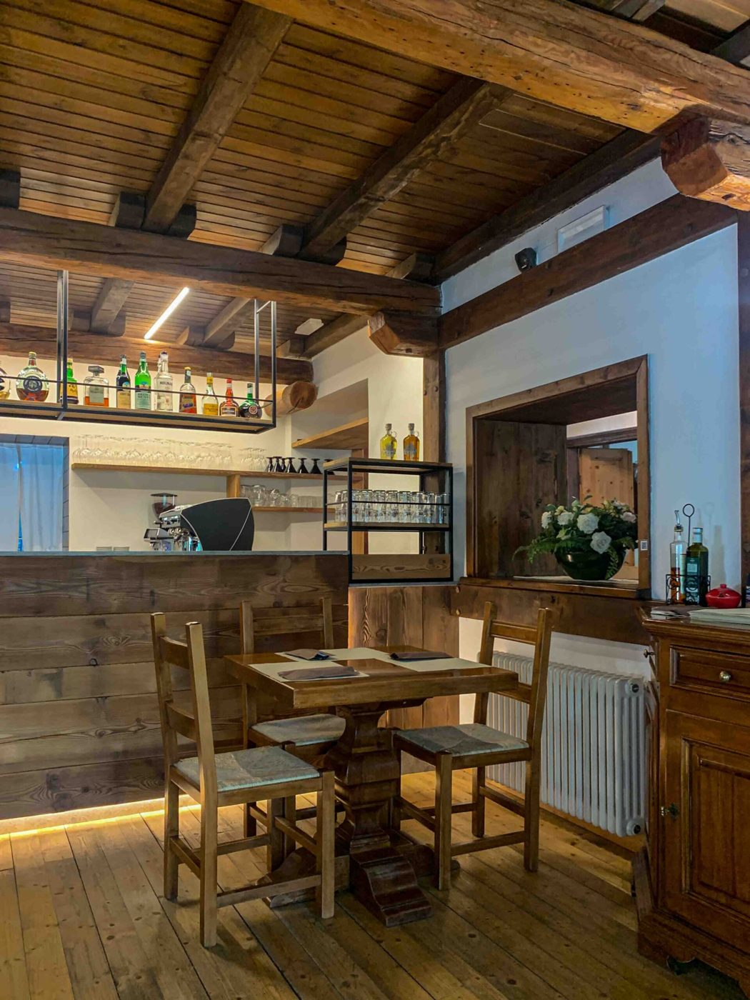

Il filò era il ritrovo serale attorno al fuoco. Da noi, a Levico Terme, il fuoco è quello del forno — in un locale tutto in legno.
Chi siamo
Travi a vista, pavimento di legno, tavoli grandi da condividere. El Filò nasce per farti sentire a casa: impasto a lunga lievitazione, cottura nel forno a legna e pizze per tutti i gusti.
Scopri la nostra storia